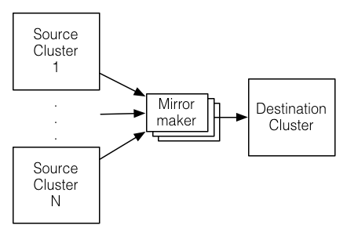

bin/ directory of the Kafka distribution and each tool will print details on all possible commandline options if it is run with no arguments.
Topics are added and modified using the topic tool:
> bin/kafka-topics.sh --zookeeper zk_host:port/chroot --create --topic my_topic_name
--partitions 20 --replication-factor 3 --config x=y
The replication factor controls how many servers will replicate each message that is written. If you have a replication factor of 3 then up to 2 servers can fail before you will lose access to your data. We recommend you use a replication factor of 2 or 3 so that you can transparently bounce machines without interrupting data consumption.
The partition count controls how many logs the topic will be sharded into. There are several impacts of the partition count. First each partition must fit entirely on a single server. So if you have 20 partitions the full data set (and read and write load) will be handled by no more than 20 servers (no counting replicas). Finally the partition count impacts the maximum parallelism of your consumers. This is discussed in greater detail in the concepts section.
The configurations added on the command line override the default settings the server has for things like the length of time data should be retained. The complete set of per-topic configurations is documented here.
To add partitions you can do
> bin/kafka-topics.sh --zookeeper zk_host:port/chroot --alter --topic my_topic_name
--partitions 40
Be aware that one use case for partitions is to semantically partition data, and adding partitions doesn't change the partitioning of existing data so this may disturb consumers if they rely on that partition. That is if data is partitioned by hash(key) % number_of_partitions then this partitioning will potentially be shuffled by adding partitions but Kafka will not attempt to automatically redistribute data in any way.
To add configs:
> bin/kafka-topics.sh --zookeeper zk_host:port/chroot --alter --topic my_topic_name --config x=yTo remove a config:
> bin/kafka-topics.sh --zookeeper zk_host:port/chroot --alter --topic my_topic_name --deleteConfig xAnd finally deleting a topic:
> bin/kafka-topics.sh --zookeeper zk_host:port/chroot --delete --topic my_topic_nameTopic deletion option is disabled by default. To enable it set the server config
delete.topic.enable=true
Kafka does not currently support reducing the number of partitions for a topic.
Instructions for changing the replication factor of a topic can be found here.
controlled.shutdown.enable=true
Note that controlled shutdown will only succeed if all the partitions hosted on the broker have replicas (i.e. the replication factor is greater than 1 and at least one of these replicas is alive). This is generally what you want since shutting down the last replica would make that topic partition unavailable.
To avoid this imbalance, Kafka has a notion of preferred replicas. If the list of replicas for a partition is 1,5,9 then node 1 is preferred as the leader to either node 5 or 9 because it is earlier in the replica list. You can have the Kafka cluster try to restore leadership to the restored replicas by running the command:
> bin/kafka-preferred-replica-election.sh --zookeeper zk_host:port/chrootSince running this command can be tedious you can also configure Kafka to do this automatically by setting the following configuration:
auto.leader.rebalance.enable=true

A common use case for this kind of mirroring is to provide a replica in another datacenter. This scenario will be discussed in more detail in the next section.
You can run many such mirroring processes to increase throughput and for fault-tolerance (if one process dies, the others will take overs the additional load).
Data will be read from topics in the source cluster and written to a topic with the same name in the destination cluster. In fact the mirror maker is little more than a Kafka consumer and producer hooked together.
The source and destination clusters are completely independent entities: they can have different numbers of partitions and the offsets will not be the same. For this reason the mirror cluster is not really intended as a fault-tolerance mechanism (as the consumer position will be different); for that we recommend using normal in-cluster replication. The mirror maker process will, however, retain and use the message key for partitioning so order is preserved on a per-key basis.
Here is an example showing how to mirror a single topic (named my-topic) from two input clusters:
> bin/kafka-run-class.sh kafka.tools.MirrorMaker
--consumer.config consumer-1.properties --consumer.config consumer-2.properties
--producer.config producer.properties --whitelist my-topic
Note that we specify the list of topics with the --whitelist option. This option allows any regular expression using Java-style regular expressions. So you could mirror two topics named A and B using --whitelist 'A|B'. Or you could mirror all topics using --whitelist '*'. Make sure to quote any regular expression to ensure the shell doesn't try to expand it as a file path. For convenience we allow the use of ',' instead of '|' to specify a list of topics.
Sometime it is easier to say what it is that you don't want. Instead of using --whitelist to say what you want to mirror you can use --blacklist to say what to exclude. This also takes a regular expression argument.
Combining mirroring with the configuration auto.create.topics.enable=true makes it possible to have a replica cluster that will automatically create and replicate all data in a source cluster even as new topics are added.
> bin/kafka-run-class.sh kafka.tools.ConsumerOffsetChecker --zkconnect localhost:2181 --group test Group Topic Pid Offset logSize Lag Owner my-group my-topic 0 0 0 0 test_jkreps-mn-1394154511599-60744496-0 my-group my-topic 1 0 0 0 test_jkreps-mn-1394154521217-1a0be913-0
The process of migrating data is manually initiated but fully automated. Under the covers what happens is that Kafka will add the new server as a follower of the partition it is migrating and allow it to fully replicate the existing data in that partition. When the new server has fully replicated the contents of this partition and joined the in-sync replica one of the existing replicas will delete their partition's data.
The partition reassignment tool can be used to move partitions across brokers. An ideal partition distribution would ensure even data load and partition sizes across all brokers. The partition reassignment tool does not have the capability to automatically study the data distribution in a Kafka cluster and move partitions around to attain an even load distribution. As such, the admin has to figure out which topics or partitions should be moved around.
The partition reassignment tool can run in 3 mutually exclusive modes -
For instance, the following example will move all partitions for topics foo1,foo2 to the new set of brokers 5,6. At the end of this move, all partitions for topics foo1 and foo2 will only exist on brokers 5,6
Since, the tool accepts the input list of topics as a json file, you first need to identify the topics you want to move and create the json file as follows-
> cat topics-to-move.json
{"topics": [{"topic": "foo1"},
{"topic": "foo2"}],
"version":1
}
Once the json file is ready, use the partition reassignment tool to generate a candidate assignment-
> bin/kafka-reassign-partitions.sh --zookeeper localhost:2181 --topics-to-move-json-file topics-to-move.json --broker-list "5,6" --generate
Current partition replica assignment
{"version":1,
"partitions":[{"topic":"foo1","partition":2,"replicas":[1,2]},
{"topic":"foo1","partition":0,"replicas":[3,4]},
{"topic":"foo2","partition":2,"replicas":[1,2]},
{"topic":"foo2","partition":0,"replicas":[3,4]},
{"topic":"foo1","partition":1,"replicas":[2,3]},
{"topic":"foo2","partition":1,"replicas":[2,3]}]
}
Proposed partition reassignment configuration
{"version":1,
"partitions":[{"topic":"foo1","partition":2,"replicas":[5,6]},
{"topic":"foo1","partition":0,"replicas":[5,6]},
{"topic":"foo2","partition":2,"replicas":[5,6]},
{"topic":"foo2","partition":0,"replicas":[5,6]},
{"topic":"foo1","partition":1,"replicas":[5,6]},
{"topic":"foo2","partition":1,"replicas":[5,6]}]
}
The tool generates a candidate assignment that will move all partitions from topics foo1,foo2 to brokers 5,6. Note, however, that at this point, the partition movement has not started, it merely tells you the current assignment and the proposed new assignment. The current assignment should be saved in case you want to rollback to it. The new assignment should be saved in a json file (e.g. expand-cluster-reassignment.json) to be input to the tool with the --execute option as follows-
> bin/kafka-reassign-partitions.sh --zookeeper localhost:2181 --reassignment-json-file expand-cluster-reassignment.json --execute
Current partition replica assignment
{"version":1,
"partitions":[{"topic":"foo1","partition":2,"replicas":[1,2]},
{"topic":"foo1","partition":0,"replicas":[3,4]},
{"topic":"foo2","partition":2,"replicas":[1,2]},
{"topic":"foo2","partition":0,"replicas":[3,4]},
{"topic":"foo1","partition":1,"replicas":[2,3]},
{"topic":"foo2","partition":1,"replicas":[2,3]}]
}
Save this to use as the --reassignment-json-file option during rollback
Successfully started reassignment of partitions
{"version":1,
"partitions":[{"topic":"foo1","partition":2,"replicas":[5,6]},
{"topic":"foo1","partition":0,"replicas":[5,6]},
{"topic":"foo2","partition":2,"replicas":[5,6]},
{"topic":"foo2","partition":0,"replicas":[5,6]},
{"topic":"foo1","partition":1,"replicas":[5,6]},
{"topic":"foo2","partition":1,"replicas":[5,6]}]
}
Finally, the --verify option can be used with the tool to check the status of the partition reassignment. Note that the same expand-cluster-reassignment.json (used with the --execute option) should be used with the --verify option
> bin/kafka-reassign-partitions.sh --zookeeper localhost:2181 --reassignment-json-file expand-cluster-reassignment.json --verify Status of partition reassignment: Reassignment of partition [foo1,0] completed successfully Reassignment of partition [foo1,1] is in progress Reassignment of partition [foo1,2] is in progress Reassignment of partition [foo2,0] completed successfully Reassignment of partition [foo2,1] completed successfully Reassignment of partition [foo2,2] completed successfully
For instance, the following example moves partition 0 of topic foo1 to brokers 5,6 and partition 1 of topic foo2 to brokers 2,3
The first step is to hand craft the custom reassignment plan in a json file-
> cat custom-reassignment.json
{"version":1,"partitions":[{"topic":"foo1","partition":0,"replicas":[5,6]},{"topic":"foo2","partition":1,"replicas":[2,3]}]}
Then, use the json file with the --execute option to start the reassignment process-
> bin/kafka-reassign-partitions.sh --zookeeper localhost:2181 --reassignment-json-file custom-reassignment.json --execute
Current partition replica assignment
{"version":1,
"partitions":[{"topic":"foo1","partition":0,"replicas":[1,2]},
{"topic":"foo2","partition":1,"replicas":[3,4]}]
}
Save this to use as the --reassignment-json-file option during rollback
Successfully started reassignment of partitions
{"version":1,
"partitions":[{"topic":"foo1","partition":0,"replicas":[5,6]},
{"topic":"foo2","partition":1,"replicas":[2,3]}]
}
The --verify option can be used with the tool to check the status of the partition reassignment. Note that the same expand-cluster-reassignment.json (used with the --execute option) should be used with the --verify option
bin/kafka-reassign-partitions.sh --zookeeper localhost:2181 --reassignment-json-file custom-reassignment.json --verify Status of partition reassignment: Reassignment of partition [foo1,0] completed successfully Reassignment of partition [foo2,1] completed successfully
For instance, the following example increases the replication factor of partition 0 of topic foo from 1 to 3. Before increasing the replication factor, the partition's only replica existed on broker 5. As part of increasing the replication factor, we will add more replicas on brokers 6 and 7.
The first step is to hand craft the custom reassignment plan in a json file-
> cat increase-replication-factor.json
{"version":1,
"partitions":[{"topic":"foo","partition":0,"replicas":[5,6,7]}]}
Then, use the json file with the --execute option to start the reassignment process-
> bin/kafka-reassign-partitions.sh --zookeeper localhost:2181 --reassignment-json-file increase-replication-factor.json --execute
Current partition replica assignment
{"version":1,
"partitions":[{"topic":"foo","partition":0,"replicas":[5]}]}
Save this to use as the --reassignment-json-file option during rollback
Successfully started reassignment of partitions
{"version":1,
"partitions":[{"topic":"foo","partition":0,"replicas":[5,6,7]}]}
The --verify option can be used with the tool to check the status of the partition reassignment. Note that the same increase-replication-factor.json (used with the --execute option) should be used with the --verify option
bin/kafka-reassign-partitions.sh --zookeeper localhost:2181 --reassignment-json-file increase-replication-factor.json --verify Status of partition reassignment: Reassignment of partition [foo,0] completed successfullyYou can also verify the increase in replication factor with the kafka-topics tool-
> bin/kafka-topics.sh --zookeeper localhost:2181 --topic foo --describe Topic:foo PartitionCount:1 ReplicationFactor:3 Configs: Topic: foo Partition: 0 Leader: 5 Replicas: 5,6,7 Isr: 5,6,7
quota.producer.default=10485760 quota.consumer.default=10485760It is also possible to set custom quotas for each client.
> bin/kafka-configs.sh --zookeeper localhost:2181 --alter --add-config 'producer_byte_rate=1024,consumer_byte_rate=2048' --entity-name clientA --entity-type clients Updated config for clientId: "clientA".Here's how to describe the quota for a given client.
> ./kafka-configs.sh --zookeeper localhost:2181 --describe --entity-name clientA --entity-type clients Configs for clients:clientA are producer_byte_rate=1024,consumer_byte_rate=2048
This deployment pattern allows datacenters to act as independent entities and allows us to manage and tune inter-datacenter replication centrally. This allows each facility to stand alone and operate even if the inter-datacenter links are unavailable: when this occurs the mirroring falls behind until the link is restored at which time it catches up.
For applications that need a global view of all data you can use mirroring to provide clusters which have aggregate data mirrored from the local clusters in all datacenters. These aggregate clusters are used for reads by applications that require the full data set.
This is not the only possible deployment pattern. It is possible to read from or write to a remote Kafka cluster over the WAN, though obviously this will add whatever latency is required to get the cluster.
Kafka naturally batches data in both the producer and consumer so it can achieve high-throughput even over a high-latency connection. To allow this though it may be necessary to increase the TCP socket buffer sizes for the producer, consumer, and broker using the socket.send.buffer.bytes and socket.receive.buffer.bytes configurations. The appropriate way to set this is documented here.
It is generally not advisable to run a single Kafka cluster that spans multiple datacenters over a high-latency link. This will incur very high replication latency both for Kafka writes and ZooKeeper writes, and neither Kafka nor ZooKeeper will remain available in all locations if the network between locations is unavailable.
All configurations are documented in the configuration section.
# Replication configurations num.replica.fetchers=4 replica.fetch.max.bytes=1048576 replica.fetch.wait.max.ms=500 replica.high.watermark.checkpoint.interval.ms=5000 replica.socket.timeout.ms=30000 replica.socket.receive.buffer.bytes=65536 replica.lag.time.max.ms=10000 controller.socket.timeout.ms=30000 controller.message.queue.size=10 # Log configuration num.partitions=8 message.max.bytes=1000000 auto.create.topics.enable=true log.index.interval.bytes=4096 log.index.size.max.bytes=10485760 log.retention.hours=168 log.flush.interval.ms=10000 log.flush.interval.messages=20000 log.flush.scheduler.interval.ms=2000 log.roll.hours=168 log.retention.check.interval.ms=300000 log.segment.bytes=1073741824 # ZK configuration zookeeper.connection.timeout.ms=6000 zookeeper.sync.time.ms=2000 # Socket server configuration num.io.threads=8 num.network.threads=8 socket.request.max.bytes=104857600 socket.receive.buffer.bytes=1048576 socket.send.buffer.bytes=1048576 queued.max.requests=16 fetch.purgatory.purge.interval.requests=100 producer.purgatory.purge.interval.requests=100Our client configuration varies a fair amount between different use cases.
-Xmx6g -Xms6g -XX:MetaspaceSize=96m -XX:+UseG1GC -XX:MaxGCPauseMillis=20 -XX:InitiatingHeapOccupancyPercent=35 -XX:G1HeapRegionSize=16M -XX:MinMetaspaceFreeRatio=50 -XX:MaxMetaspaceFreeRatio=80For reference, here are the stats on one of LinkedIn's busiest clusters (at peak): - 60 brokers - 50k partitions (replication factor 2) - 800k messages/sec in - 300 MB/sec inbound, 1 GB/sec+ outbound The tuning looks fairly aggressive, but all of the brokers in that cluster have a 90% GC pause time of about 21ms, and they're doing less than 1 young GC per second.
You need sufficient memory to buffer active readers and writers. You can do a back-of-the-envelope estimate of memory needs by assuming you want to be able to buffer for 30 seconds and compute your memory need as write_throughput*30.
The disk throughput is important. We have 8x7200 rpm SATA drives. In general disk throughput is the performance bottleneck, and more disks is more better. Depending on how you configure flush behavior you may or may not benefit from more expensive disks (if you force flush often then higher RPM SAS drives may be better).
We have seen a few issues running on Windows and Windows is not currently a well supported platform though we would be happy to change that.
You likely don't need to do much OS-level tuning though there are a few things that will help performance.
Two configurations that may be important:
If you configure multiple data directories partitions will be assigned round-robin to data directories. Each partition will be entirely in one of the data directories. If data is not well balanced among partitions this can lead to load imbalance between disks.
RAID can potentially do better at balancing load between disks (although it doesn't always seem to) because it balances load at a lower level. The primary downside of RAID is that it is usually a big performance hit for write throughput and reduces the available disk space.
Another potential benefit of RAID is the ability to tolerate disk failures. However our experience has been that rebuilding the RAID array is so I/O intensive that it effectively disables the server, so this does not provide much real availability improvement.
Kafka must eventually call fsync to know that data was flushed. When recovering from a crash for any log segment not known to be fsync'd Kafka will check the integrity of each message by checking its CRC and also rebuild the accompanying offset index file as part of the recovery process executed on startup.
Note that durability in Kafka does not require syncing data to disk, as a failed node will always recover from its replicas.
We recommend using the default flush settings which disable application fsync entirely. This means relying on the background flush done by the OS and Kafka's own background flush. This provides the best of all worlds for most uses: no knobs to tune, great throughput and latency, and full recovery guarantees. We generally feel that the guarantees provided by replication are stronger than sync to local disk, however the paranoid still may prefer having both and application level fsync policies are still supported.
The drawback of using application level flush settings are that this is less efficient in it's disk usage pattern (it gives the OS less leeway to re-order writes) and it can introduce latency as fsync in most Linux filesystems blocks writes to the file whereas the background flushing does much more granular page-level locking.
In general you don't need to do any low-level tuning of the filesystem, but in the next few sections we will go over some of this in case it is useful.
Pdflush has a configurable policy that controls how much dirty data can be maintained in cache and for how long before it must be written back to disk. This policy is described here. When Pdflush cannot keep up with the rate of data being written it will eventually cause the writing process to block incurring latency in the writes to slow down the accumulation of data.
You can see the current state of OS memory usage by doing
> cat /proc/meminfoThe meaning of these values are described in the link above.
Using pagecache has several advantages over an in-process cache for storing data that will be written out to disk:
It is not necessary to tune these settings, however those wanting to optimize performance have a few knobs that will help:
The easiest way to see the available metrics to fire up jconsole and point it at a running kafka client or server; this will all browsing all metrics with JMX.
We pay particular we do graphing and alerting on the following metrics:
| Description | Mbean name | Normal value |
|---|---|---|
| Message in rate | kafka.server:type=BrokerTopicMetrics,name=MessagesInPerSec | |
| Byte in rate | kafka.server:type=BrokerTopicMetrics,name=BytesInPerSec | |
| Request rate | kafka.network:type=RequestMetrics,name=RequestsPerSec,request={Produce|FetchConsumer|FetchFollower} | |
| Byte out rate | kafka.server:type=BrokerTopicMetrics,name=BytesOutPerSec | |
| Log flush rate and time | kafka.log:type=LogFlushStats,name=LogFlushRateAndTimeMs | |
| # of under replicated partitions (|ISR| < |all replicas|) | kafka.server:type=ReplicaManager,name=UnderReplicatedPartitions | 0 |
| Is controller active on broker | kafka.controller:type=KafkaController,name=ActiveControllerCount | only one broker in the cluster should have 1 |
| Leader election rate | kafka.controller:type=ControllerStats,name=LeaderElectionRateAndTimeMs | non-zero when there are broker failures |
| Unclean leader election rate | kafka.controller:type=ControllerStats,name=UncleanLeaderElectionsPerSec | 0 |
| Partition counts | kafka.server:type=ReplicaManager,name=PartitionCount | mostly even across brokers |
| Leader replica counts | kafka.server:type=ReplicaManager,name=LeaderCount | mostly even across brokers |
| ISR shrink rate | kafka.server:type=ReplicaManager,name=IsrShrinksPerSec | If a broker goes down, ISR for some of the partitions will shrink. When that broker is up again, ISR will be expanded once the replicas are fully caught up. Other than that, the expected value for both ISR shrink rate and expansion rate is 0. |
| ISR expansion rate | kafka.server:type=ReplicaManager,name=IsrExpandsPerSec | See above |
| Max lag in messages btw follower and leader replicas | kafka.server:type=ReplicaFetcherManager,name=MaxLag,clientId=Replica | lag should be proportional to the maximum batch size of a produce request. |
| Lag in messages per follower replica | kafka.server:type=FetcherLagMetrics,name=ConsumerLag,clientId=([-.\w]+),topic=([-.\w]+),partition=([0-9]+) | lag should be proportional to the maximum batch size of a produce request. |
| Requests waiting in the producer purgatory | kafka.server:type=ProducerRequestPurgatory,name=PurgatorySize | non-zero if ack=-1 is used |
| Requests waiting in the fetch purgatory | kafka.server:type=FetchRequestPurgatory,name=PurgatorySize | size depends on fetch.wait.max.ms in the consumer |
| Request total time | kafka.network:type=RequestMetrics,name=TotalTimeMs,request={Produce|FetchConsumer|FetchFollower} | broken into queue, local, remote and response send time |
| Time the request waiting in the request queue | kafka.network:type=RequestMetrics,name=QueueTimeMs,request={Produce|FetchConsumer|FetchFollower} | |
| Time the request being processed at the leader | kafka.network:type=RequestMetrics,name=LocalTimeMs,request={Produce|FetchConsumer|FetchFollower} | |
| Time the request waits for the follower | kafka.network:type=RequestMetrics,name=RemoteTimeMs,request={Produce|FetchConsumer|FetchFollower} | non-zero for produce requests when ack=-1 |
| Time to send the response | kafka.network:type=RequestMetrics,name=ResponseSendTimeMs,request={Produce|FetchConsumer|FetchFollower} | |
| Number of messages the consumer lags behind the producer by | kafka.consumer:type=ConsumerFetcherManager,name=MaxLag,clientId=([-.\w]+) | |
| The average fraction of time the network processors are idle | kafka.network:type=SocketServer,name=NetworkProcessorAvgIdlePercent | between 0 and 1, ideally > 0.3 |
| The average fraction of time the request handler threads are idle | kafka.server:type=KafkaRequestHandlerPool,name=RequestHandlerAvgIdlePercent | between 0 and 1, ideally > 0.3 |
| Quota metrics per client-id | kafka.server:type={Produce|Fetch},client-id==([-.\w]+) | Two attributes. throttle-time indicates the amount of time in ms the client-id was throttled. Ideally = 0. byte-rate indicates the data produce/consume rate of the client in bytes/sec. |
| Metric/Attribute name | Description | Mbean name |
|---|---|---|
| waiting-threads | The number of user threads blocked waiting for buffer memory to enqueue their records | kafka.producer:type=producer-metrics,client-id=([-.\w]+) |
| buffer-total-bytes | The maximum amount of buffer memory the client can use (whether or not it is currently used). | kafka.producer:type=producer-metrics,client-id=([-.\w]+) |
| buffer-available-bytes | The total amount of buffer memory that is not being used (either unallocated or in the free list). | kafka.producer:type=producer-metrics,client-id=([-.\w]+) |
| bufferpool-wait-time | The fraction of time an appender waits for space allocation. | kafka.producer:type=producer-metrics,client-id=([-.\w]+) |
| batch-size-avg | The average number of bytes sent per partition per-request. | kafka.producer:type=producer-metrics,client-id=([-.\w]+) |
| batch-size-max | The max number of bytes sent per partition per-request. | kafka.producer:type=producer-metrics,client-id=([-.\w]+) |
| compression-rate-avg | The average compression rate of record batches. | kafka.producer:type=producer-metrics,client-id=([-.\w]+) |
| record-queue-time-avg | The average time in ms record batches spent in the record accumulator. | kafka.producer:type=producer-metrics,client-id=([-.\w]+) |
| record-queue-time-max | The maximum time in ms record batches spent in the record accumulator | kafka.producer:type=producer-metrics,client-id=([-.\w]+) |
| request-latency-avg | The average request latency in ms | kafka.producer:type=producer-metrics,client-id=([-.\w]+) |
| request-latency-max | The maximum request latency in ms | kafka.producer:type=producer-metrics,client-id=([-.\w]+) |
| record-send-rate | The average number of records sent per second. | kafka.producer:type=producer-metrics,client-id=([-.\w]+) |
| records-per-request-avg | The average number of records per request. | kafka.producer:type=producer-metrics,client-id=([-.\w]+) |
| record-retry-rate | The average per-second number of retried record sends | kafka.producer:type=producer-metrics,client-id=([-.\w]+) |
| record-error-rate | The average per-second number of record sends that resulted in errors | kafka.producer:type=producer-metrics,client-id=([-.\w]+) |
| record-size-max | The maximum record size | kafka.producer:type=producer-metrics,client-id=([-.\w]+) |
| record-size-avg | The average record size | kafka.producer:type=producer-metrics,client-id=([-.\w]+) |
| requests-in-flight | The current number of in-flight requests awaiting a response. | kafka.producer:type=producer-metrics,client-id=([-.\w]+) |
| metadata-age | The age in seconds of the current producer metadata being used. | kafka.producer:type=producer-metrics,client-id=([-.\w]+) |
| connection-close-rate | Connections closed per second in the window. | kafka.producer:type=producer-metrics,client-id=([-.\w]+) |
| connection-creation-rate | New connections established per second in the window. | kafka.producer:type=producer-metrics,client-id=([-.\w]+) |
| network-io-rate | The average number of network operations (reads or writes) on all connections per second. | kafka.producer:type=producer-metrics,client-id=([-.\w]+) |
| outgoing-byte-rate | The average number of outgoing bytes sent per second to all servers. | kafka.producer:type=producer-metrics,client-id=([-.\w]+) |
| request-rate | The average number of requests sent per second. | kafka.producer:type=producer-metrics,client-id=([-.\w]+) |
| request-size-avg | The average size of all requests in the window. | kafka.producer:type=producer-metrics,client-id=([-.\w]+) |
| request-size-max | The maximum size of any request sent in the window. | kafka.producer:type=producer-metrics,client-id=([-.\w]+) |
| incoming-byte-rate | Bytes/second read off all sockets | kafka.producer:type=producer-metrics,client-id=([-.\w]+) |
| response-rate | Responses received sent per second. | kafka.producer:type=producer-metrics,client-id=([-.\w]+) |
| select-rate | Number of times the I/O layer checked for new I/O to perform per second | kafka.producer:type=producer-metrics,client-id=([-.\w]+) |
| io-wait-time-ns-avg | The average length of time the I/O thread spent waiting for a socket ready for reads or writes in nanoseconds. | kafka.producer:type=producer-metrics,client-id=([-.\w]+) |
| io-wait-ratio | The fraction of time the I/O thread spent waiting. | kafka.producer:type=producer-metrics,client-id=([-.\w]+) |
| io-time-ns-avg | The average length of time for I/O per select call in nanoseconds. | kafka.producer:type=producer-metrics,client-id=([-.\w]+) |
| io-ratio | The fraction of time the I/O thread spent doing I/O | kafka.producer:type=producer-metrics,client-id=([-.\w]+) |
| connection-count | The current number of active connections. | kafka.producer:type=producer-metrics,client-id=([-.\w]+) |
| outgoing-byte-rate | The average number of outgoing bytes sent per second for a node. | kafka.producer:type=producer-node-metrics,client-id=([-.\w]+),node-id=([0-9]+) |
| request-rate | The average number of requests sent per second for a node. | kafka.producer:type=producer-node-metrics,client-id=([-.\w]+),node-id=([0-9]+) |
| request-size-avg | The average size of all requests in the window for a node. | kafka.producer:type=producer-node-metrics,client-id=([-.\w]+),node-id=([0-9]+) |
| request-size-max | The maximum size of any request sent in the window for a node. | kafka.producer:type=producer-node-metrics,client-id=([-.\w]+),node-id=([0-9]+) |
| incoming-byte-rate | The average number of responses received per second for a node. | kafka.producer:type=producer-node-metrics,client-id=([-.\w]+),node-id=([0-9]+) |
| request-latency-avg | The average request latency in ms for a node. | kafka.producer:type=producer-node-metrics,client-id=([-.\w]+),node-id=([0-9]+) |
| request-latency-max | The maximum request latency in ms for a node. | kafka.producer:type=producer-node-metrics,client-id=([-.\w]+),node-id=([0-9]+) |
| response-rate | Responses received sent per second for a node. | kafka.producer:type=producer-node-metrics,client-id=([-.\w]+),node-id=([0-9]+) |
| record-send-rate | The average number of records sent per second for a topic. | kafka.producer:type=producer-topic-metrics,client-id=([-.\w]+),topic=([-.\w]+) |
| byte-rate | The average number of bytes sent per second for a topic. | kafka.producer:type=producer-topic-metrics,client-id=([-.\w]+),topic=([-.\w]+) |
| compression-rate | The average compression rate of record batches for a topic. | kafka.producer:type=producer-topic-metrics,client-id=([-.\w]+),topic=([-.\w]+) |
| record-retry-rate | The average per-second number of retried record sends for a topic | kafka.producer:type=producer-topic-metrics,client-id=([-.\w]+),topic=([-.\w]+) |
| record-error-rate | The average per-second number of record sends that resulted in errors for a topic. | kafka.producer:type=producer-topic-metrics,client-id=([-.\w]+),topic=([-.\w]+) |
| produce-throttle-time-max | The maximum time in ms a request was throttled by a broker. | kafka.producer:type=producer-topic-metrics,client-id=([-.\w]+) |
| produce-throttle-time-avg | The average time in ms a request was throttled by a broker. | kafka.producer:type=producer-topic-metrics,client-id=([-.\w]+) |